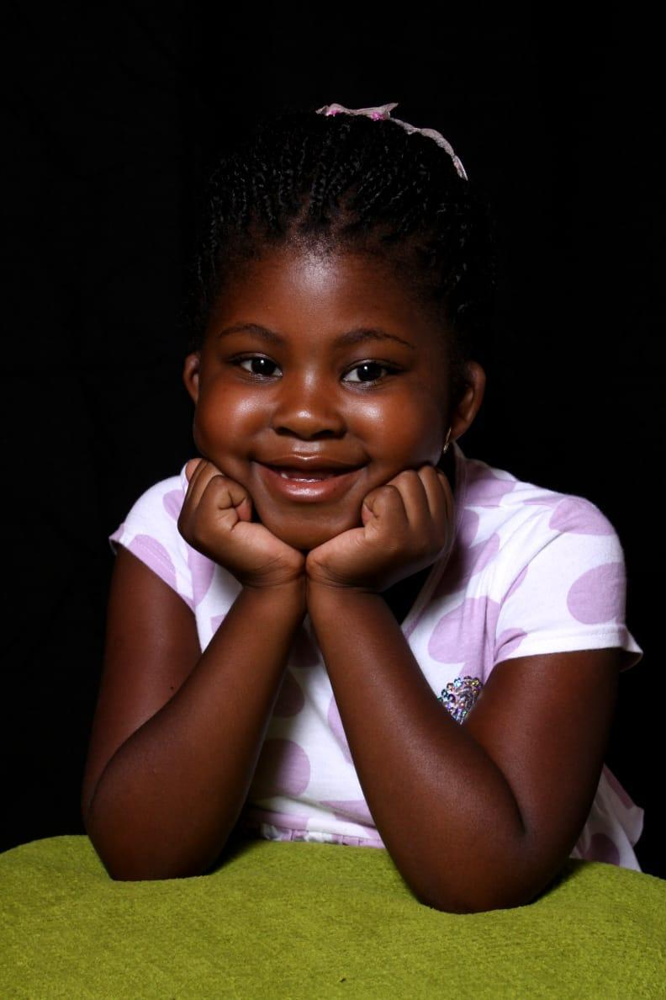

Independent reporting on one woman's ongoing development.
BREAKING NEWS
LOCAL WOMAN OFFICIALLY TURNS 21
After twenty years of character development, questionable
decisions, unexpected lessons and a considerable amount of
becoming, Remoratile Mokati has officially entered her 21st year.
By The Remoratile Times Editorial Desk
BREAKING NEWS
WOMAN DECIDES TO CELEBRATE HERSELF
In a move described by sources as “about time,” local woman
Remoratile has decided that her 21st birthday will not simply
happen to her. Instead, she has built an entire experience for
herself, because apparently receiving a normal birthday was not
enough.
TECHNOLOGY
LOCAL COMPUTER SCIENCE GIRL CREATES ENTIRE BIRTHDAY WEBSITE
Witnesses report that the subject spent an unreasonable amount
of time turning birthday plans into an interactive digital
experience. The resulting website contains memories, plans,
music, reflections, a timeline, a future theme reveal and
several classified elements.
“If I can think of it, I can probably turn it into a project.”
EDUCATION
WOMAN CONTINUES TO INSIST THAT SHE CAN FIGURE IT OUT
Despite the occasional academic crisis, confusing module,
long study session and moment of “what am I even doing?”,
the subject continues learning. Sources confirm that giving
up remains an unpopular option.
NOW
THEN & NOW
A QUICK LOOK AT THE SUBJECT
Twenty years of development have produced someone curious,
ambitious, creative, emotional and very much still becoming.
There is no final version of Remoratile on file. Fortunately,
the editorial team has been informed that the next edition is
already in progress.

THEN
BUSINESS
ENTREPRENEUR REFUSES TO SIT STILL
Between tutoring, building ideas and finding new ways to make
things happen, the subject continues to treat “I could start
something” as a potentially dangerous sentence.
Her work through Excellent Studies ZA has also given her a way
to help learners while building something of her own.
LEADERSHIP
LOCAL WOMAN SOMEHOW ENDS UP IN CHARGE OF THINGS
Sources confirm that Remoratile has taken on leadership
responsibilities in STEM and technology spaces, including
IntegraTech, while continuing to participate in community and
student initiatives.
LIFESTYLE
WHO IS REMORATILE MOKATI?
CURIOUSAMBITIOUSCREATIVEEMOTIONALTHOUGHTFULSTUBBORN WHEN NECESSARYOCCASIONALLY CHAOTICOVERTHINKERLOVES GOOD CONVERSATIONSBIG LAUGHSREADERBUILDERSURPRISE GIVERBLUE
A person who cares a lot, thinks a lot, creates a lot and is
learning to choose herself too.
YEAR 21 FORECAST
OUTLOOK: HIGHLY UNPREDICTABLE
New experiences: likely
Opportunities: pending
Learning: guaranteed
Money-making schemes: probable
Creative projects: extremely probable
Good memories: expected
Questionable decisions: statistically unavoidable
Potential headline of the year:
“WAIT, I ACTUALLY DID THAT?”
CLASSIFIED STATISTICS
21Current age
BLUEFavorite color
OVERTHINKINGKnown weakness
GETTING BACK UPKnown strength
BECOMINGCurrent status
∞Ideas under consideration
ADVERTISEMENT
NEED A BIRTHDAY EXPERIENCE?
REMORATILE™
Blue. Slightly dramatic. Classified. Interactive.
Sent by email. Cake-pop compatible.
No refunds. Subject is non-refundable.
OPINION
THE EDITORIAL: YOU DO NOT HAVE TO HAVE IT ALL FIGURED OUT
Turning 21 does not magically produce a finished person.
There is no official handbook, no secret answer key and no
deadline by which everything must make sense.
You are allowed to keep becoming. You are allowed to create
things that fail. You are allowed to change your mind, try again,
rest, cry, laugh until your stomach hurts, love people deeply
and still choose yourself.
You can learn. You can build. You can earn. You can love.
You can create. You can live.
Keep going. Keep becoming.
ARCHIVE
THE CURRENT INVENTORY OF ME
This year's birthday archive belongs here: one photo from the
day, one tiny piece of the day, a receipt, a note, a memory,
a screenshot, a silly moment, or anything that proves this
version of you existed.
ARCHIVE STATUS
WAITING FOR 07.10.2026
To be filled by Future Birthday Girl.
FINAL REPORT • 07/10/2026
21 YEARS OF REMORATILE
CASE STATUS:
OPEN
NEXT CHAPTER:
21
FINAL OBSERVATION:
The future remains unknown. This is considered acceptable.
The subject has not disappeared.
She has simply become someone new.